Climate change had become too big a problem for individual companies or countries to tackle alone. To address the problem collectively, countries are entering into international agreements and developing national strategies to reduce emissions.
International climate cooperation
In 1988, the United Nations officially recognised climate change as a major concern for humanity.
To better understand the problem, the UN and the World Meteorological Organization (WMO) established the Intergovernmental Panel on Climate Change (IPCC) that same year.
The IPCC published its first Assessment Report in 1990. In it, scientists confirmed that climate change posed a real threat and was directly linked to human activity. In subsequent reports, the IPCC continued to refine its assessments based on the latest scientific evidence.
Source: IPCC; CO₂ data from Mauna Loa Observatory, Hawaii (Dr Pieter Tans, NOAA/GML, and Dr Ralph Keeling, Scripps Institution of Oceanography)
The UN’s 17 Sustainable Development Goals
Tackling climate change is part of the broader global challenge of achieving sustainable development. This concept rests on three pillars – economic growth, social well-being, and environmental protection, and climate change directly affects all three.
In September 2015, at the UN General Assembly, 193 countries adopted the 2030 Agenda for Sustainable Development. At its heart are the 17 Sustainable Development Goals (SDGs), designed to guide action by all countries and encourage international cooperation in areas of critical importance for humanity and the planet.
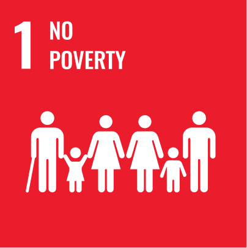
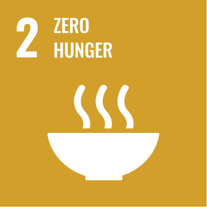
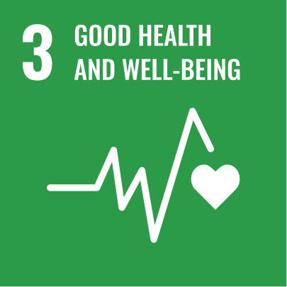
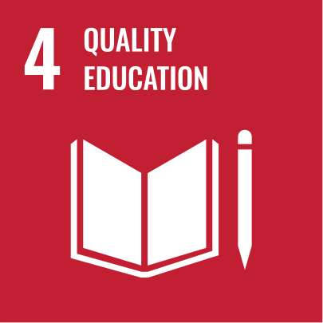
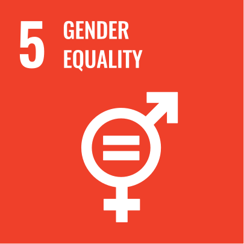
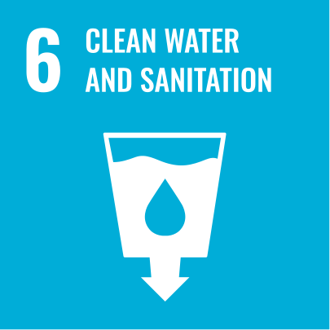
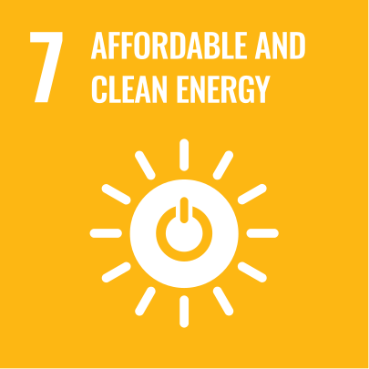


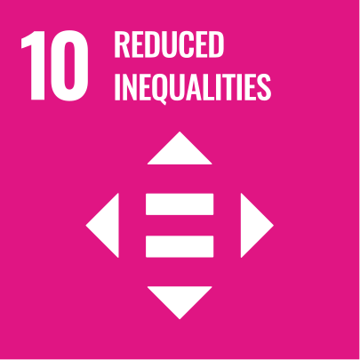
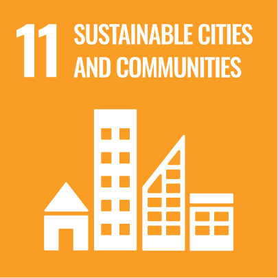
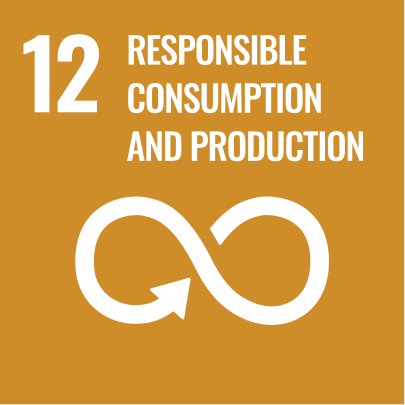

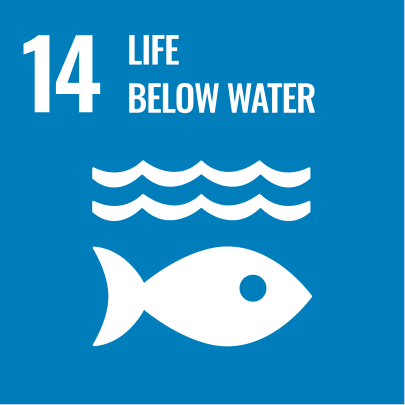
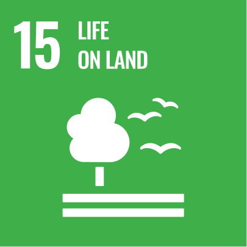

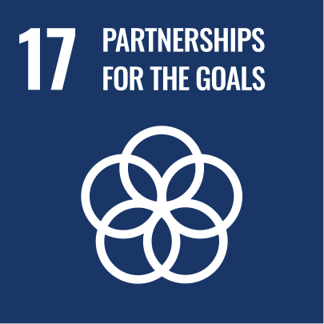
Although Goal 13 focuses specifically on climate action, climate change is, in fact, an issue that cuts across all 17 goals. It directly threatens efforts to end hunger, ensure access to clean water, improve healthcare, and promote economic growth. It is therefore clear that most of the Sustainable Development Goals cannot be achieved without decisive action on climate change.
United Nations Framework Convention on Climate Change (UNFCCC)
By the early 1990s, scientists had concluded that tackling climate change required a global effort, with the UN providing the best platform for international cooperation. In 1992, countries agreed to work together and adopted the main international agreement in this area – the United Nations Framework Convention on Climate Change (UNFCCC).
The Convention’s primary objective is to prevent dangerous human interference with the climate system by stabilising greenhouse gas concentrations in the atmosphere. It is based on the principle of common but differentiated responsibilities: although all countries share responsibility for addressing climate change, developed countries should take the lead and provide financial and technological support to developing countries.
To assess progress, countries report to the UNFCCC. Every four to five years, they prepare national communications on their climate policies, and every two years, they submit national greenhouse gas inventories. Both types of reporting are now incorporated into Biennial Transparency Reports (BTRs). Nationally Determined Contributions (NDCs), however, are part of the Paris Agreement, which we will explore later.
The UNFCCC Secretariat is based in Bonn, Germany.
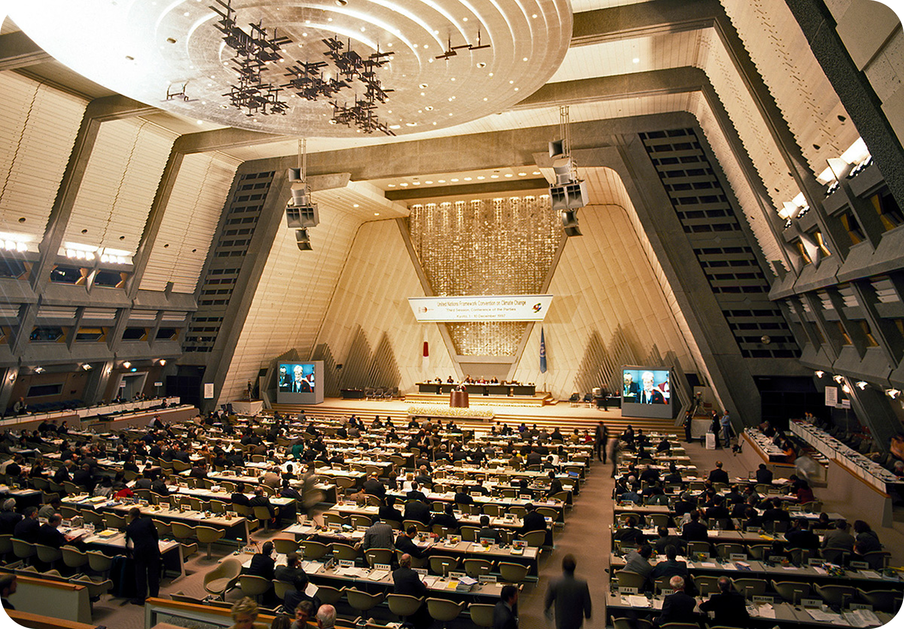
Third Conference of the Parties to the UNFCCC in Kyoto
Kyoto Protocol
The climate convention governed countries’ climate actions only until the beginning of the 21st century. Therefore, at the first Conference of the Parties in 1995, the participating countries decided to develop a new, more specific agreement. Following difficult negotiations, they adopted the Kyoto Protocol in Kyoto, Japan, in December 1997.
For the first time, the Protocol established specific emissions reduction targets and deadlines, introducing market-based mechanisms, including emissions trading, to help achieve them. It required countries to take action primarily at the national level but also provided three flexible mechanisms to support their efforts:
- International Emissions Trading
- Clean Development Mechanism (CDM)
- Joint Implementation (JI)
The idea behind these mechanisms was simple: reduce emissions wherever it costs the least – for example, in developing countries. This also encouraged green investment and helped businesses replace outdated, polluting technologies with cleaner alternatives.
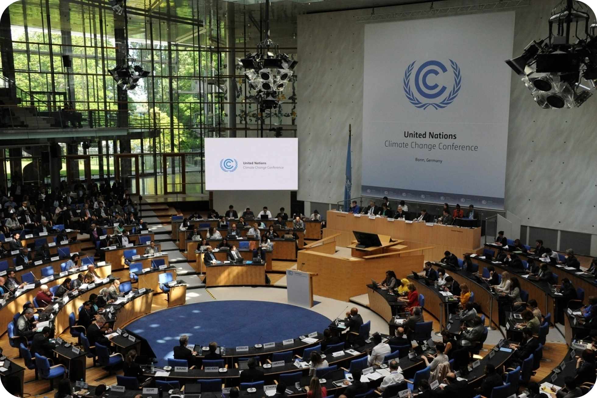
Paris Agreement signing ceremony
Paris Agreement
The Kyoto Protocol had limited effectiveness because some of the world’s largest emitters, including the United States, did not ratify it, while Canada withdrew. Nevertheless, it set an important precedent: for the first time, it established legally binding emissions targets and laid the groundwork for market-based mechanisms, paving the way for a new, more ambitious agreement.
In 2012, countries agreed to begin negotiations on a new global climate agreement. These negotiations led to the adoption of the Paris Agreement in 2015.
The Agreement’s primary goal is to hold the increase in the global average temperature to well below 2 °C above pre-industrial levels and pursue efforts to limit the temperature increase to 1.5 °C.
To achieve this, each country sets and submits its own long-term emissions reduction targets for 2030, known as Nationally Determined Contributions (NDCs), and updates them every five years. In addition, countries should develop long-term low greenhouse gas emission development strategies and plans to adapt to the already unavoidable impacts of climate change.
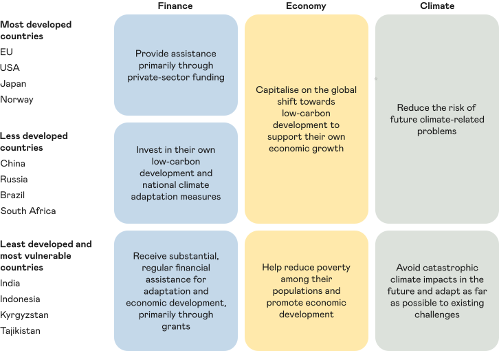
NGOs, social movements, and activism
Non-governmental organisations (NGOs), social movements, and activists also play a key role in tackling climate change, alongside governments. They shape public opinion, raise awareness of climate issues, and press governments and businesses to take meaningful action.
Climate policy instruments and regulation
Countries use several key approaches to regulate emissions effectively:
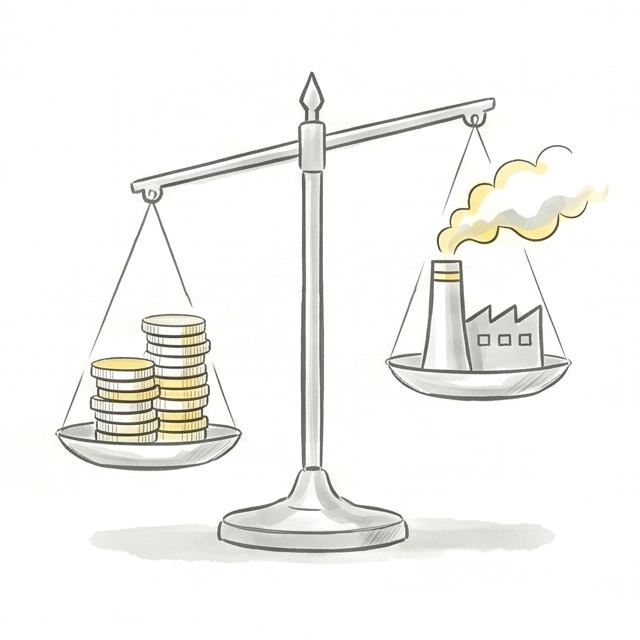
Establishing carbon marketsSystems for trading emissions allowances and carbon credits
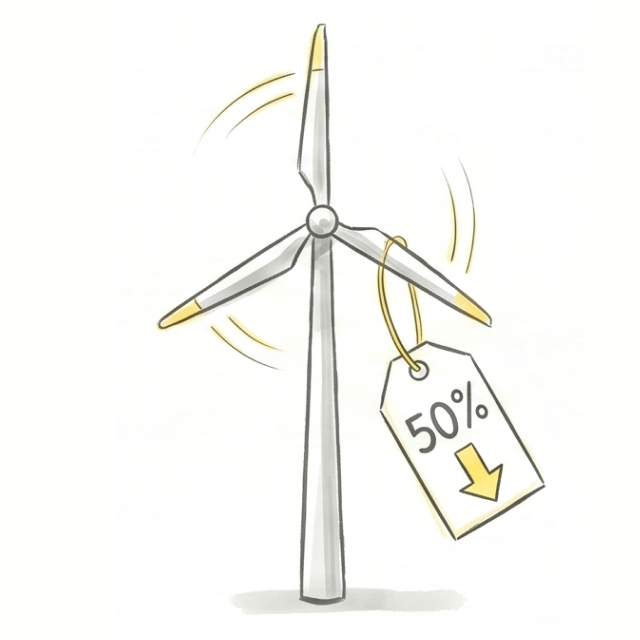
Tax incentives and subsidiesFor companies adopting green technologies
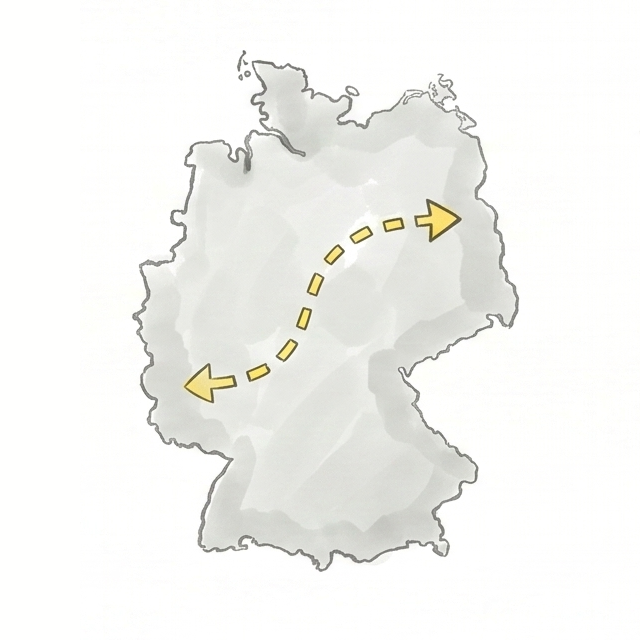
National low-carbon development strategies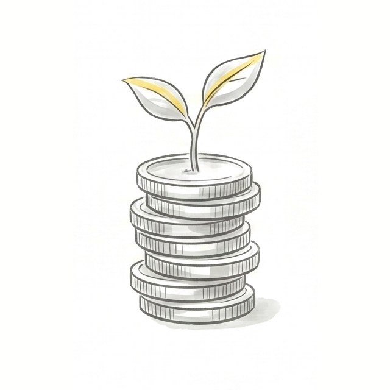
Green finance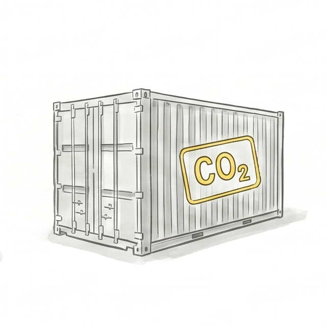
Cross-border mechanismsAccount for the carbon footprint of imported goods
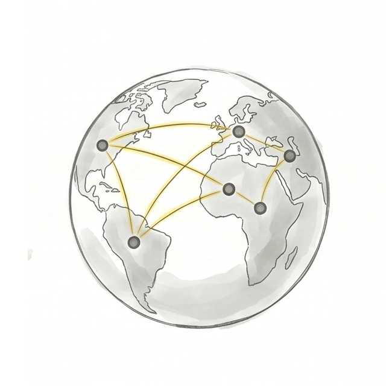
International cooperationTo share experience
How is countries’ climate performance measured?
The Climate Change Performance Index (CCPI) was developed to assess how effectively countries are tackling climate change. It evaluates 57 countries and the European Union, which together account for more than 90% of global greenhouse gas emissions.
CCPI ranking
The index is based on 14 indicators grouped into four categories:
- Greenhouse gas emissions (weight: 40%).
- Renewable energy (weight: 20%).
- Energy use (weight: 20%).
- Climate policy (weight: 20%).
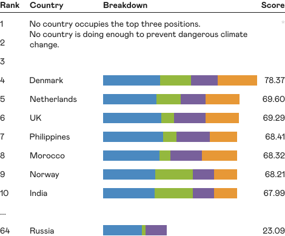
Source: ccpi.org
The key finding of the most recent CCPI ranking is that no country received a “very high” rating. No country is fully meeting the Paris Agreement’s goal of holding global warming to below 2 °C. That is why the top three places in the ranking are traditionally left vacant.
Government policy and climate regulation in Russia
To participate in international climate cooperation, every country needs its own domestic climate policy. In Russia, this policy focuses on two key areas: regulating emissions and adapting to the impacts of climate change.
Emissions regulation
Russia’s climate policy is built around its participation in international agreements. Russia joined the UN Framework Convention on Climate Change, ratified the Kyoto Protocol in 2004, and joined the Paris Agreement in 2019, reaffirming its emissions reduction commitments.

Climate Doctrine of the Russian Federation
The principal document setting out the country’s overall climate policy and its goal of achieving carbon neutrality by 2060.
View →
Low-Carbon Development Strategy until 2050
Sets out specific measures to achieve carbon neutrality, including developing renewable energy, improving energy efficiency, and harnessing the absorptive capacity of forests.
View →
Federal Law No. 296-FZ on Limiting Greenhouse Gas Emissions (2021)
Introduced mandatory carbon reporting for large companies, a framework for climate projects, and a system of carbon credits.
View →These key documents are supplemented by other legislation, such as the Federal Law on Environmental Protection, and implementing regulations that specify how climate policy mechanisms work.
The Russian Ministry of Economic Development is responsible for developing government policy and regulations on limiting greenhouse gas emissions.
Adapting to the impacts of climate change
Alongside reducing emissions, Russia is actively preparing for the impacts of climate change that are already unavoidable. This phased effort is being driven through national adaptation plans and is based on the National Adaptation Strategy approved in 2019 to protect people, infrastructure, and ecosystems.
Several key documents provide the framework for adaptation. The Climate Doctrine of the Russian Federation identifies proactive adaptation as a priority and states that all measures should take international agreements into account. The Spatial Development Strategy to 2030, in turn, emphasises the need to reduce vulnerability to the adverse impacts of climate change while taking advantage of its potential benefits.
Stages of the national adaptation plan
The first stage of the national adaptation plan was completed in 2022. It focused on establishing an integrated adaptation system in Russia, including national, sectoral, and regional plans, along with a methodological framework. Its primary aim was to help regions and industries identify climate risks, understand their nature and potential financial impacts, and select measures to adapt to them and prevent adverse consequences.
The next step was the national plan for the second stage of adaptation, covering the period up to 2025. The plan focused on updating existing sectoral, regional, and corporate plans using the methodologies developed during the first stage.
A system of climate risk profiles was introduced to assess risks across regions. To ensure a consistent approach to assessing risks and their financial impacts, selecting adaptation measures, and monitoring their implementation, the Russian Ministry of Economic Development approved relevant guidelines.
As a result, Russia developed a multilevel system for managing climate adaptation, with national plans serving as the primary coordination tool. The second stage ended in 2025, and the third began, this time spanning five years rather than three, through to 2030. According to the Russian Ministry of Economic Development, the Russian Government approved the plan for the third stage of adaptation on 25 June 2026. As of October 2025, 10 sectoral and 82 regional adaptation plans had been approved in Russia.
The first two stages generated a wealth of information about climate risks in different regions and their financial impacts. The third plan therefore focuses on several major challenges, including falling water levels in the Caspian Sea, permafrost degradation in the Arctic, reducing flood impacts, and restoring natural resources.
Source: HSE University, Ranking of Russian Regions by the Need for Climate Change Adaptation. The top 10 regions are highlighted for each risk (national view, SSP2-4.5 scenario).
Sakhalin Experiment
The Sakhalin Experiment marked an important step towards establishing a national carbon market in Russia. Launched in 2021, this pilot project operates on a simple principle: companies in the region are allocated greenhouse gas emissions allowances. If a company reduces its emissions and has excess carbon allowances, it can sell them to other participants. This gives businesses a direct financial incentive to adopt cleaner technologies.
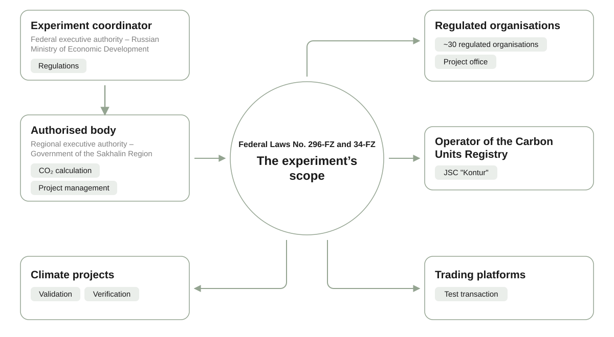
Source: Sakhalin. Eco & Sustainability
Results of the Sakhalin Experiment
The experiment achieved its primary goal ahead of schedule: the region reached carbon neutrality in 2024, a full year before the deadline of 31 December 2025 set in 2021. According to Kommersant daily, the region cut greenhouse gas emissions by two-thirds, while increasing its gross regional product by one-third. Gas infrastructure expansion played a major role, with gas penetration rising to 68% by 2026, up from 14% in 2019. A total of 58 boiler houses were already running on gas, with another 6 scheduled to come online in 2026 and more than 40 slated for completion by 2030.
More than 5,800 vehicles were converted to run on gas in 2024. The region registered 420 electric vehicles and 840 hybrids and purchased 253 gas-powered buses. The charging network expanded to 329 charging points. An electric car-sharing service operates in Yuzhno-Sakhalinsk.
In 2024, roofs and façades were repaired across 392 apartment buildings. Over 12 thousand streetlights were replaced with energy-efficient alternatives. The region reduced its annual energy consumption by 28 million kWh of electricity and 123 thousand Gcal of heat.
A solar power plant was commissioned on Iturup Island in 2022. By the end of 2024, total green energy capacity had reached 9 MW, generating 24 million kWh of clean electricity annually and reducing emissions by 18 kt of CO₂ equivalent.
The first hydrogen technology testing site in the Russian Far East opened in 2024. Sakhalin is now developing the Eastern Hydrogen Cluster. Plans for 2026 include launching a 30 ktpa hydrogen production plant, a hydrogen-powered train, and a dedicated centre of excellence.
Separate waste collection was introduced throughout the region, achieving 100% coverage. By the end of 2024, the share of waste sorted at landfill sites had risen to 38%. New and revamped wastewater treatment facilities reached a combined capacity of 1 million cubic metres per year.
By the end of 2024, forest area had increased by 8 thousand hectares, boosting CO₂ absorption by 350 ktpa of CO₂ equivalent. Scientists also assessed the amount of carbon stored in coastal and wetland ecosystems for the first time.
The regional carbon market is also growing. In 2025, 131 thousand carbon credits were retired for compliance purposes (eight times more than a year earlier), while the total volume of emissions allowances reached 266 kt of CO₂ equivalent. Thirty-five companies participate in the expanded carbon reporting system. By early 2026, 98 climate projects had been registered and 36.5 million carbon credits had been issued, with the projects’ combined potential exceeding 101.5 million credits.
In June 2026, Valery Limarenko, Governor of the Sakhalin Region, proposed ending the experiment two years earlier than the deadline established by federal law – on 31 December 2026 rather than at the end of 2028. He argued that the emissions cap, fixed for the entire duration of the experiment, was restricting capacity expansion and production growth under current economic conditions.
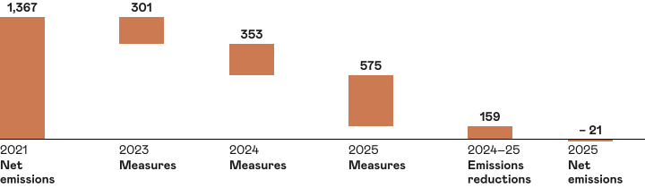
Source: Research Expertise Institute
International agreements and national strategies provide the foundation for tackling climate change. But they cannot succeed without each of us playing a part.
The final chapter explores how you can help address the problem, how our everyday habits affect the planet, and the role education plays in tackling climate change.